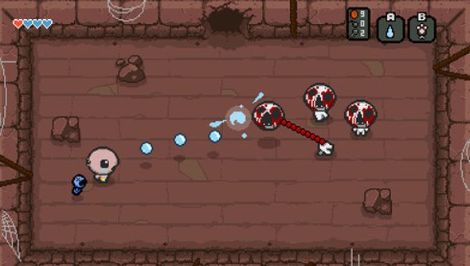
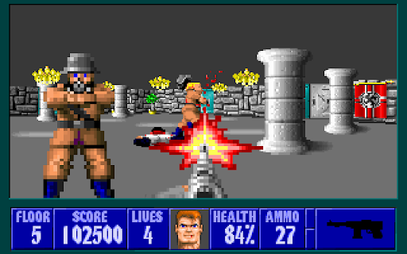
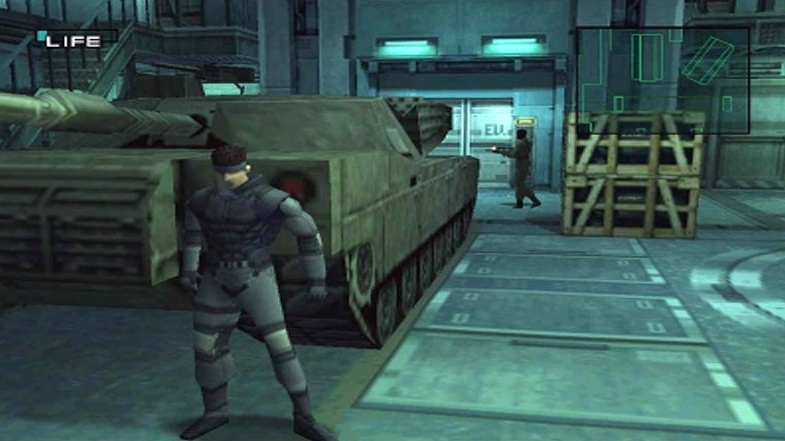

Shooter Games
Shooter games are a subgenre of action video game, which often test the player's spatial awareness, reflexes, and speed in both isolated single player or networked multiplayer environments. Shooter games encompass many subgenres that have the commonality of focusing on the actions of the avatar engaging in combat with a weapon against both code-driven NPC enemies or other avatars controlled by other players.
Usually this weapon is a firearm or some other long-range weapon, and can be used in combination with other tools such as grenades for indirect offense, armor for additional defense, or accessories such as telescopic sights to modify the behavior of the weapons. A common resource found in many shooter games is ammunition, armor or health, or upgrades which augment the player character's weapons.
Most commonly, the purpose of a shooter game is to shoot opponents and proceed through missions without the player character being killed or dying as a result of the player's actions. A shooting game is a genre of video game where the focus is almost entirely on the defeat of the character's enemies using the weapons given to the player.
Popular Subgenres
Arena shooter
Arena shooters are multiplayer shooters that feature fast pace gameplay that emphasizes quick speed and agile movement. These games will usually feature weapons that don't require to reload with continuous ammo, floaty gravity and jumps, and very fast character movement. Examples of these include the Quake and Unreal series, more specifically Quake III Arena and Unreal Tournament which first pioneered the genre. These games are also characterized by their focus on multiplayer only with most titles not even featuring a single player mode. While the genre hits its peak in popularity in the late 90s and early 2000s, they have become less popular in recent times with other shooter genres rising to prominence with many of the newest arena shooters being released and developed by indie studios like Reflex Arena.
|  |
First-Person Shooter
First-person shooters are characterized by an on-screen view that simulates the in-game character's point of view. While many rail shooters and light-gun shooters also use a first-person perspective, they are generally not included in this
Notable examples of the genre include Doom,
Half Life,
Counter Strike,
Battlefield,
Call of Duty and
Halo.
|  |
Third-Person Shooter
Third-person shooters are characterized by a third-person camera view that fully displays the player character in his/her surroundings.
Notable examples of the genre include the Tomb Raider series, Syphon Filter, Max Payne, SOCOM, Star Wars: Battlefront, Gears of War, and Splatoon.
Third person shooter mechanics are often incorporated into open-world adventure and sandbox games, including the The Elder Scrolls series and the Grand Theft Auto franchise .
|  |
Loot Shooter
Loot shooters are shooter games where the player's overarching goal is the accumulation of loot; weapons, equipment, armor, accessories and resources.
To achieve this players complete tasks framed as quests, missions or campaigns and are rewarded with better weapons, gear and accessories as a result, with the qualities, attributes and perks of such gear generated randomly following certain rarity scales (also known as loot tables).
The better gear allows players to take on more difficult missions with potentially more powerful rewards, forming the game's compulsion loop.
Loot shooters are inspired by similar loot-based action role-playing games like Diablo.
Examples of loot shooters include the Borderlands franchise, Warframe, Destiny and its sequel, Tom Clancy's The Division and its sequel, and Anthem.
 |